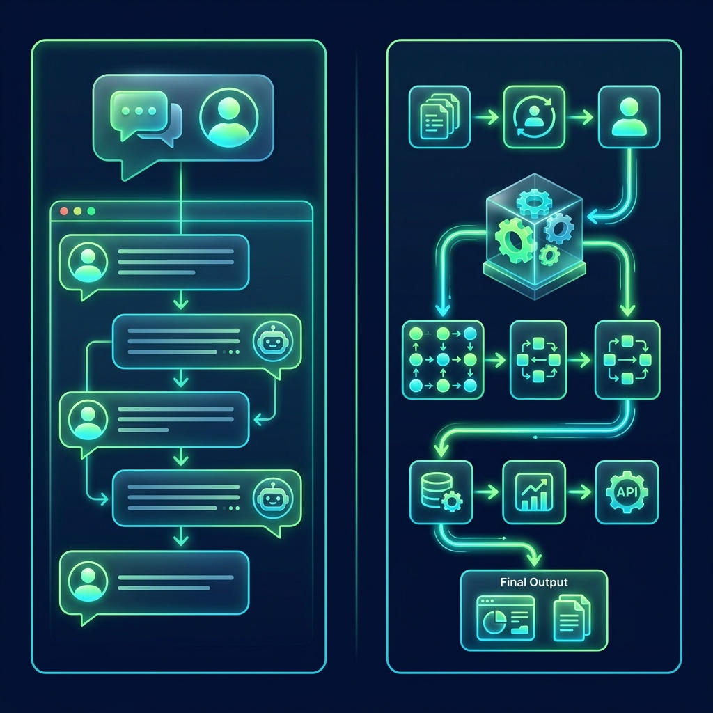

Codex Client 개요 및 Workspace 이해
Workspace 프로젝트 콘텍스트 이해, 회의록 전처리 및 요약 객체 분류
1차시. Codex Client 개요 및 Workspace 이해 세션 시작
Workspace 프로젝트 콘텍스트 이해, 회의록 전처리 및 요약 객체 분류
- 과정명: [ACE Startup SW/AI 파일럿 과정] Day 1. Codex Client 기반 요구사항 정의 교육 과정
- 1차시 주제: Codex Client 및 Workspace 이해 (AI 협업의 첫걸음)
- 시간 계획 (총 180분):
- 도입 (30분) - 수업 오프닝 및 생각 열기
- 실습 설명 (30분) - ChatGPT vs Codex Client 차이 및 Workspace 프로젝트 개념
- 실습 진행 (90분) - 회의록 전처리 및 요약 객체 분류 실습
- 공유 및 정리 (30분) - 실습 산출물 공유 및 피드백
- 도입 질문: "ChatGPT에게 매번 좋은 답변을 얻기 위해 프롬프트를 고쳐 쓰는 것과, 하나의 에이전트를 설계하는 것은 무엇이 다를까요?"
- 비교 분석:
- ChatGPT 질문: 일회성 질의, 답변을 얻기 위한 즉흥적 시도, 개인의 프롬프트 작성 능력에 의존.
- Codex Workspace: 다중 파일의 관계 감시 및 콘텍스트 캐싱, 일관된 명세 설계, 자동화 연계 파이프라인 형성.

| 구분 | 0단계. 회의록 요약 전처리 | 1단계. 기획 요소 객체 분류 |
|---|---|---|
| 주요 목적 | 사담 및 핑퐁 대화 걷어내기 (노이즈 필터링) | 정제된 정보들을 성격에 따라 카탈로깅 |
| 수행 동작 | 15줄 이내의 평서문 형태 비정형 기획 메모 추출 | 사용자 역할, 기능 후보, 비즈니스 룰, 미결정 사안 분리 |
| 산출 파일 | meeting-notes.md 생성 |
4가지 기획 컴포넌트 객체 정의 |
automation 폴더 생성automation 폴더 등록- 실습 1단계: meeting-notes-raw.md 파일 생성
작업 폴더 내에
meeting-notes-raw.md파일을 만들고 전문가 상담 Kick-off 대화록을 붙여넣습니다. - 실습 2단계: AI 창에 전처리 지시 프롬프트 전송
0단계 요약 전처리 프롬프트 (복사 가능)
meeting-notes-raw.md의 회의록 원문을 읽고, 화자 간의 불필요한 대화 맥락과 문맥을 걷어내고 서비스 사용자, 기능 요건, 시스템 정책, 미결정 유보 사항을 15줄 내외의 컴팩트한 비정형 요약 메모 형태로 작성해줘. 원문에 없는 가상의 내용은 임의로 상상해서 추가하지 말아줘.
- 기대 산출물:
meeting-notes.md요약 파일이 로컬 폴더 내에 자동으로 생성 및 저장됨.
meeting-notes.md를 읽고 다음 내용을 구분해줘. 1. 서비스 사용자 2. 사용자가 수행하는 기능 3. 시스템이 수행하는 기능 4. 비즈니스 규칙 5. 아직 결정되지 않은 사항 회의 메모에 없는 내용은 추가하지 말고 불명확한 내용은 별도로 표시해줘.
* 서비스 사용자: - Customer (상담 예약 및 결제) - Expert (상담 스케줄 실시간 확인) - Admin (전문가 승인 정책 수행)
* 비즈니스 룰: 결제 완료되어야 확정 * 미결정 유보 사항: - 예약 완료 알림 채널 (SMS/이메일) - 취소 위약금 및 환불 정책
- 기획 검수 자가 진단 가이드:
- 1. **역할 정의**: 사용자가 Customer, Expert, Admin의 3개 주체로 명확히 나뉘어 매칭되었는가?
- 2. **인과 관계**: 결제와 예약 스케줄 승인의 연관 관계가 누락 없이 분류되었는가?
- 3. **미결정 분리**: SMS/이메일 알림 보류 사항과 수수료 정책이 미결정 사항으로 구분되어 분리되었는가?
- 4. **사실성 검증(Anti-Hallucination)**: 대화록 원본에 없는 가상의 기능(포인트 충전, 회원 탈퇴)이 AI 분석에 흘러들지 않았는가?
- 1차시 요약:
- 질문보다 Workspace: Codex Client는 로컬 디렉토리 전체를 AI 뇌의 콘텍스트로 매핑하여 다중 파일 연계 사양을 설계한다.
- 대화 전처리 요약: 비정형 줄글에서 노이즈를 필터링(0단계)하고, 사용자/기능/룰/유보 사항으로 카탈로깅(1단계)했다.
- 다음 차시 예고: 2차시. 단계형 요구사항 명세화 파이프라인 (기능 요구사항 정의서 표 및 정상/예외 시나리오 설계)
일관성 검증, 변경 관리 및 의사결정 추적
문서 간 모순 비교 검수, 요구사항 변경에 따른 영향 범위 분석 및 의사결정 이력 관리
2차시. 일관성 검증, 변경 관리 및 의사결정 추적 세션 시작
- 주제: 다중 문서 불일치 검출 (Consistency Check)
- 핵심 가치: 기획서, 화면 설계서, 개발 명세서가 각기 다른 버전으로 유통되어 엉뚱한 제품이 빌드되는 장애 방지
- 시간 계획 (총 180분):
- 도입 (30분) - 문서 간 불일치가 유발하는 재작업(Rework) 비용과 AI 검토 비서의 역할
- 실습 설명 (30분) - 3대 기획 명세 파일 설계 및 모순점 예시 소개
- 실습 진행 (90분) - 다중 문서 모순 감사 프롬프트 실행 및 검수
- 공유 및 피드백 (30분) - 별점 평가 주체 반전 오류 등 자가 진단 및 피드백
- 기획 삼각 모순 시나리오:
- 기획 회의록: 탈퇴 시 "예약 즉시 자동 취소 및 전액 환불" 합의.
- 요구사항서: 탈퇴 시 "예약 상담 레코드는 시스템 안전상 보관 유지".
- 화면설계서: 탈퇴 시 "별도 안내 팝업 없이 화면 상에서만 예약 숨김".
- 발생 결과: 출시 전 개발팀과 디자인팀의 로직 엇갈림으로 인한 치명적인 재작업(Rework) 발생.

- 1단계: meeting-notes.md 생성
위약금 수수료 10%, 탈퇴 시 자동 취소 전액 환불, 별점 평가, 비회원 예약버튼 비활성화 기록.
- 2단계: requirements.md 생성
회원탈퇴 시 기존 예약 보관(유지), FR-004 별점 평가 주체 반대로 작성 (Expert가 Customer 평가).
- 3단계: screen-specification.md 생성
비회원 홈 화면 예약하기 활성화, 회원탈퇴 팝업 없음, Customer가 전문가 평가하도록 설계.
- 실습 지시: AI 창에 대조 프롬프트 전송
불일치 감사 프롬프트 (복사 가능)
프로젝트 폴더 내에 있는 'meeting-notes.md', 'requirements.md', 'screen-specification.md' 세 문서를 비교 분석해줘. 각 문서 간에 서로 모순되거나 불일치하는 항목, 혹은 한쪽 문서에만 존재하고 다른 문서에서는 누락된 항목을 찾아서 정리해줘. 결과는 '구분(기능/화면/정책/용어 등)', '발견 내용 및 모순점', '영향도(높음/중간/낮음)', '권한이 가장 높은 기준 문서', '권장 조치' 칼럼을 가진 Markdown 표 형태로 정리해줘. 개발 및 테스트 진입 시 치명적인 리워크를 유발하는 사항은 영향도를 '높음'으로 표기해줘.
- 기대 결과: 세 문서에 분산된 위약금 누락, 별점 주체 반전, 비회원 권한, 탈퇴 환불 정책 충돌 보고서 획득.
- 주요 오디팅 발견 항목 점검:
- 1. **평가 주체 반전**: 회의록과 화면설계서는 Customer가 Expert를 평가하도록 되어 있으나, 요구사항 정의서(FR-004)는 Expert가 Customer를 평가하도록 모순됨. (영향도: **높음**)
- 2. **회원 탈퇴 프로세스 불일치**: 회의록(자동 취소 및 전액 환불) vs 요구사항서(데이터 유지 보관) vs 화면설계서(안내 없이 숨김)로 세 문서가 모두 다름. (영향도: **높음**)
- 3. **비회원 권한 모순**: 회의록(예약 버튼 비활성화) vs 화면설계서(비회원 예약하기 활성화 및 즉시 진입) 충돌. (영향도: **중간**)
- 주제: 요구사항 변경 및 영향도 분석 (Impact Analysis)
- 핵심 가치: 요구사항 개정(v1.0 ➔ v2.0) 시, 종속된 화면 UI, 백엔드 API 명세, DB 스키마 컬럼의 동시 변경 범위 식별
- 시간 계획 (총 180분):
- 도입 (30분) - 변경 요청 한 줄이 시스템 전반에 유발하는 나비효과와 의미론적 디프
- 실습 설명 (30분) - 변경 전/후 명세서와 잔존 v1.0 문서 매핑 구조 이해
- 실습 진행 (90분) - Google 로그인, SMS 인증, Admin 다원 권한 변경 영향 분석 실습
- 공유 및 피드백 (30분) - DB 스키마 컬럼 및 API Payload 변수 매핑 검수
- 변경 요청: "회원가입에 휴대폰 번호를 통한 SMS 인증번호 확인 절차를 추가해 주세요."
- 연쇄 영향:
- 화면: 이메일 단일 가입 폼 ➔ 휴대폰 번호 및 인증코드 입력 필드 UI 교체.
- API: signup API Payload에
phone및verification_code변수 필수 추가. - DB: Users 테이블에
phone및is_verified컬럼 추가.

- 1단계: requirements-before.md 생성
v1.0 요구사항 정의서 (이메일 로그인/가입, 모든 가입자 User 권한 자동 부여).
- 2단계: requirements-after.md 생성
v2.0 요구사항 정의서 (Google 소셜 로그인 지원, 휴대폰 SMS 가입 인증, User/Admin 권한 다원화).
- 3단계: screen-specification-v2.md 생성
v1.0 기준의 잔존 화면 설계서 (이메일/비밀번호 필드만 있음, 이메일 링크 인증 가이드, 일반 마이페이지만 표시).
- 4단계: api-specification.md 생성
v1.0 기준의 잔존 백엔드 API 명세서 (login, signup API Payload 변수에 email, password만 존재).
- 실습 지시: AI 창에 변경 영향 분석 프롬프트 전송
영향도 매핑 프롬프트 (복사 가능)
requirements-before.md와 requirements-after.md의 변경점을 대조해줘. 그 후, 변경된 정책이 v1.0 수준에 머물러 있는 'screen-specification-v2.md' 및 'api-specification.md' 문서의 어느 부분에 반영되어야 하는지 분석해서 '변경 항목', '변경 전', '변경 후', '영향 범위 (화면/API)', '중요도', '조치 사항 (필요한 구체적인 수정 가이드)' 칼럼을 가진 Markdown 표 형태로 출력해줘.
- 기대 결과: Google 소셜 로그인, 휴대폰 가입, Super/Sub Admin 권한 다원화 요건 매핑 테이블 획득.
- 종합 실습 과제 (Task 06):
"회원가입에 휴대폰 인증 기능이 추가될 경우 영향을 받는 화면, API, DB, 문서를 모두 찾아 영향도 분석 보고서를 작성해 주세요."
- 핵심 피드백 포인트:
- 화면 기획: 가입 UI에 휴대폰 및 인증번호 확인 폼 추가 (중요도: **높음**)
- API 명세: signup API Payload에
phone,verification_code필드 추가 (중요도: **중간**) - DB 스키마: Users 테이블에
phone(VARCHAR) 및is_verified(BOOLEAN) 컬럼 추가 (중요도: **높음**) - 관리자 화면: 관리자 백오피스 회원 목록에 컬럼 노출 추가 (중요도: **낮음**)
- 가치 검증 체크리스트:
- 1. 단순 화면 변경 수준을 넘어 데이터베이스 스키마 테이블 컬럼 추가 요건이 제대로 식별되었는가?
- 2. API 수정 가이드에 Payload 변수명(`phone`, `verification_code` 등)이 개발 구현 수준으로 정의되었는가?
- 3. 중요도 분류(높음/중간/낮음)가 리스크 크기에 맞게 이성적으로 분류되었는가?
- 주제: 의사결정 추적(Decision Tracking) 및 프로젝트 이슈 리포트 작성
- 핵심 가치: 비정형 대화 내 의사결정 원인/배경 캡슐화, 우선순위 상태 리스크 보고서 자동화
- 시간 계획 (총 180분):
- 도입 (30분) - 결정을 내린 배경(Why)의 실실과 미결 안건 누수 리스크
- 실습 설명 (30분) - 미팅 대화록 및 의사결정 로그 구조 설명
- 실습 진행 (90분) - Decision Log 추출 및 종합 주간 이슈 보고서(Project Issue Report) 빌드
- 공유 및 피드백 (30분) - 우선순위 우선 과제 필터링 및 전체 회고
- 문제 상황: "1차 론칭에서 Apple 로그인을 빼고 구글 로그인만 넣기로 함." (회의록 결과)
- 실종된 맥락:
- Why: 애플 개발자 연간 계정 심사 지연 및 촉박한 일정 사유.
- Who: PM 최종 결정.
- 발생 비용: 이력 실종 시 다음 릴리즈 미팅 때 동일 쟁점을 두고 소모적인 중복 회의 핑퐁 재발.

• 의사결정 배경 및 논리적 근거 (Context)
• 결정일 / 담당자(의사결정 주체) / 현재 상태
예: Google 로그인만 적용(배경: 심사 지연, 담당: PM, 결정일: 7/15)
• **후속 조치 내용 및 책임 계획**
• 담당자 / 예정 완료 기한
예: 해외 결제 수단 PayPal 연동 여부(조치: 기술 검토 후 보고, 담당: 개발팀)
- 실습 1단계: messenger-chat.md 생성
작업 공간에
messenger-chat.md파일을 만들고 기획-개발 3차 의사결정 미팅 대화록을 붙여넣습니다. - 대화 이력 속성:
- 7/15: 일정 문제 및 계정 승인 지연으로 Apple 로그인 보류하고 Google만 우선 적용 합의.
- 7/16: PG 심사 지연 사유로 계좌이체 보류, PayPal 결제 기술 검토 지시.
- 7/17: 보안 감사 대비 Super/Sub Admin 2단계 계층 권한 설계 승인.
- 실습 지시: AI 창에 의사결정 추출 프롬프트 전송
의사결정 추출 프롬프트 (복사 가능)
프로젝트 폴더 내에 있는 'messenger-chat.md' 대화록을 읽고, 프로젝트 관리 및 추적을 위한 Decision Log(결정항목, 내용, 배경, 결정일, 담당자, 상태)와 Pending Items(미결항목, 후속조치, 담당자, 예정기한) 표를 작성해줘. 대화록에 없는 가상의 데이터를 꾸며내지 말아줘.
- 기대 결과: 완료된 의사결정 3건 및 PayPal 결제, Apple 로그인 보류 2건 미결 안건 자동 도출.
- 종합 실습 과제 (Task 07):
"현재 프로젝트의 주요 이슈를 요약하고, 긴급도와 우선순위를 포함한 프로젝트 이슈 리포트를 작성해 주세요."
- 긴급도/우선순위 기반 리스크 감지 보고:
- 완료: 로그인 및 사용자 인증 기능 구현 완료 (담당: 개발팀)
- 진행: 회원가입 기능(SMS 가입 인증 연동) 개발 및 테스트 중 (담당: 개발팀, 중요도: **중간**)
- 이슈: 외부 PG사 계약 승인 심사 지연에 따른 연동 병목 (담당: PM, 중요도: **높음**)
- 위험: 해외 PayPal 연동 신규 변경사항 유입에 따른 일정 압박 (담당: 기획팀, 중요도: **높음**)
- 미결: 관리자 백오피스 접근 권한(Super/Sub Admin) 정책 미확정 (담당: 기획팀, 중요도: **중간**)
- 가치 검증 체크리스트:
- 1. 단순 작업 요약을 넘어 프로젝트 일정을 지연시키는 외부 요인(PG사 심사 지연)을 이슈로 올바르게 잡아냈는가?
- 2. 위험 요소(해외 결제 도입 예정)가 우선순위 '높음'으로 책정되어 선제적 관리 대상에 들어갔는가?
- 3. 해결해야 할 책임자(PM, 기획팀, 개발팀)가 명확히 명시되었는가?
- 2일차 요약 및 마일스톤 회고:
- 일관성 확인 (Consistency): 기획서-화면설계서-회의록을 대조해 숨겨진 삼각 모순을 조기에 정밀 색출 완료.
- 변경 영향 (Impact): 이메일 가입 ➔ SMS 인증 변경 시, UI/API/DB 물리 컬럼 갱신 가이드 자동화.
- 역사성 보존 (Decision): 미팅 핑퐁 대화에서 결정 배경과 미결 안건을 분리해 주간 이슈 보고서로 피드백 완료.
- 핵심 가치: 2일간의 AI 파이프라인 협업을 통해 요구사항 생애주기 전반의 리워크 방지 설계 기법 완전 체득!
기술설계 (데이터 정규화)
데이터 모델(ERD) 합의, 도메인 용어 통일, 변경 영향 공유 및 Edge Case 안전 설계
3차시. 기술설계 (데이터 정규화) 세션 시작
- 주제: 데이터 구조 이해 차이 해결 (Data Structure Alignment)
- 핵심 가치: 기획자와 개발자 간의 개념 설계 간극을 좁혀 데이터 모델링 설계 누락 방지
- 시간 계획 (총 180분):
- 도입 (30분) - 회의록 시나리오에서 엔티티 및 관계성(카디널리티) 도출 원리
- 실습 설명 (30분) - day3_meeting_notes.md 파일 구성 요소 소개
- 실습 진행 (90분) - ERD 명세 및 Mermaid ERD 코드 자동 빌드
- 공유 및 피드백 (30분) - User/Expert/Reservation/Payment 맵 체크
- 기획 설명: "사용자가 전문가를 골라 예약하고 승인되면 결제 완료하여 확정합니다." (단순 1단계 흐름)
- 개발자 매핑 설계:
- `Users` (회원 정보)
- `Experts` (전문가)
- `Reservations` (상태값 Pending/Approved)
- `Payments` (결제 금액 및 수단)
- 상호 간의 FK 참조 및 카디널리티 (1:N, 1:1) 매핑

- 준비 데이터: day3_meeting_notes.md 생성
회원 이메일/닉네임 가입, 전문가 등록, 날짜별 상담 예약 대기, 결제 승인 예약 확정 회의록 기록.
- 실습 지시: AI 창에 ERD 도출 프롬프트 전송
ERD 모델링 프롬프트 (복사 가능)
제공된 회의록 내용을 데이터 구조 관점에서 분석하여 핵심 엔티티와 관계를 도출하고, 데이터 구조 정의서 및 Mermaid ERD 코드를 작성해줘. 임의의 엔티티를 지어내지 말고 제공된 회의록 텍스트 팩트에 기반해서 작성해줘.
- 기대 결과: User, Expert, Reservation, Payment 간의 데이터 명세 및 Mermaid 관계도 생성.
- 준비 데이터: fragmented-terms.md 생성
Figma 기획(회원, 선생님 프로필, 상담 예약), API(nickname, CounselorName, book_id), DB SQL(members, counselors, reservations) 혼용 문서 준비.
- 실습 지시: AI 창에 표준화 프롬프트 전송
용어 표준 사전 프롬프트 (복사 가능)
프로젝트 전반에 혼용되는 '회원/User/고객/Member', '상담사/Expert/선생님/Counselor' 등의 용어를 전수 분석하여, 표준 한글명, 표준 영문명, 데이터 타입, 용도 정의, 기존 혼용 단어, 추천 DB 컬럼명을 포함한 프로젝트 표준 용어 사전을 Markdown 표 형태로 작성해줘.
- 변경 요청: schema-change-request.md 생성
예약 신청 시 즉시 결제 ➔ 예약 '신청 대기(WAIT_APPROVE)' 후 전문가 '승인(Approve)' 시 결제 가능 변경서 기입.
- 실습 지시: AI 창에 영향 공유 프롬프트 전송
변경 영향 분석 프롬프트 (복사 가능)
예약 확정 프로세스가 '승인 대기' 상태 추가 및 '전문가 승인 후 결제'로 변경됨에 따라 영향을 받는 API 스펙, DB 스키마, 화면 및 변경 공유 리포트를 영향영역, 변경내용, 리스크수준, 조치대상 문서 칼럼의 표 형태로 작성해줘.
- 준비 데이터: tech-design-meeting.md 생성
예약 취소 시 메인 테이블 잠금 병목 방지 및 이력 보존을 위한 이력 테이블(1:N) 분리 회의록.
- 실습 지시: AI 창에 의사결정 로깅 프롬프트 전송
설계 결정 추출 프롬프트 (복사 가능)
회의 내용에서 정규화 및 데이터베이스 구조 설계 결정을 추출하여, 결정 항목, 배경 사유, 대안 검토, 승인자, 향후 변경 가능성을 포함하는 Design Decision Log를 작성해줘.
- 준비 데이터: database-schema.md 생성
User, Expert, Reservation, Payment 테이블 생성 SQL DDL 명세 기입.
- 실습 지시: AI 창에 Edge Case 분석 프롬프트 전송
Edge Case 분석 프롬프트 (복사 가능)
현재 정의된 User, Expert, Reservation, Payment 테이블 구조에서 발생할 수 있는 데이터 정합성 위배 Edge Case 예외 시나리오를 도출하고 개선 방안을 제시해줘. (동시 결제 오류, 회원 탈퇴 시 외래키 참조 붕괴 등을 필수 포함할 것)
- 3일차 핵심 요약:
- 데이터 구조 정렬 (Alignment): 자연어 시나리오에서 핵심 엔티티를 추출해 Mermaid ERD 설계 합의.
- 도메인 어휘 단일화 (Standardization): 동의어 클러스터링을 통해 용어 부채를 제거한 용어 사전 구축.
- 안전성 확보 (Edge Case): 외래키 무결성 붕괴 방지를 위한 Soft Delete 정책 수립 및 설계 로깅 완수.
- 다음 차시 예고: 4일차. 기술설계 - API 설계 및 인터페이스 정의
API 설계 및 인터페이스 정의
표준 API 계약서 생성, 기획-API 불일치 오디팅 및 에러 규격 아키텍처 리뷰
4차시. 기술설계 (API 설계 및 인터페이스 정의) 세션 시작
- 주제: API 계약서 생성 (API Contract Generation)
- 핵심 가치: 통신 규격을 사전 합의하여 백엔드 미완성 시에도 프론트엔드의 병렬 Mock 개발 보장
- 시간 계획 (총 180분):
- 도입 (30분) - API 규격/변수 타입 불일치가 부르는 통신 먹통 리스크
- 실습 설명 (30분) - day4_requirements.md 및 day4_screen_definition.md 대조 원리
- 실습 진행 (90분) - API 계약서 Req/Res JSON 모델 및 불일치 검출 보고서 빌드
- 공유 및 피드백 (30분) - 평점 별점 필드 누락 검출 내역 검수
- 구두 API 기획의 한계: "예약할 때 전문가 ID와 날짜를 보낼게요." ➔ 개발 단계 충돌 발생:
- 타입 모호: 날짜 포맷이 `YYYY-MM-DD` 인지 `ISO-8601` 인지 불분명해 서버 에러 유발.
- 변수명 상이: 프론트엔드는 `expertId`를 보내는데 백엔드는 `expert_id`로 받아 널포인터 에러 발생.
- 해결책: 화면 UI 필요 데이터를 토대로 영문명과 데이터 타입을 정의한 API 계약서 문서화.

- 준비 데이터: day4_requirements.md, day4_screen_definition.md 생성
상담 예약 신청 필수 요건(토큰 필수, 일시 기입) 및 화면 명세(평점 별점 노출, 예약금 표기) 기입.
- 실습 지시: AI 창에 API 계약서 도출 프롬프트 전송
API 계약서 생성 프롬프트 (복사 가능)
제공된 요구사항 정의서와 화면 정의서 내용을 기반으로, 필요한 API 목록을 도출하고 요청(Request) 및 응답(Response) 필드의 타입과 영문 변수명을 정의하여 표준 API 계약서(API Contract)를 작성해줘.
- 준비 데이터: day4_api_specification_v1.md 생성
배포된 API 목록 초안 (조회 시 전문가 ID/이름만 있음, 예약 신청 시 결제 금액 없음).
- 실습 지시: AI 창에 API 불일치 검사 프롬프트 전송
API 불일치 검사 프롬프트 (복사 가능)
제공된 day4_requirements.md, day4_screen_definition.md, day4_api_specification_v1.md 파일들을 교차 대조하여 기획 요구사항이나 화면 UI 설계와 불일치하거나 누락된 API 엔드포인트 및 필드를 찾아 검토 보고서를 작성해줘. (전문가 평점 star_rating 누락, 예약 승인 API 부재 적발 요망)
- 준비 데이터: day4_api_change_request.md 생성
예약 API에서 `payment_amount`를 제외하고, 최종 결제는 별도 `POST /api/v1/payments`로 분리 호출하는 변경서 기입.
- 실습 지시: AI 창에 API 영향도 분석 프롬프트 전송
API 영향 분석 프롬프트 (복사 가능)
제공된 API 변경 요청서(day4_api_change_request.md) 내용을 분석하여, 예약 신청 API 수정 시 영향을 받는 다른 시스템 영역과 문서의 목록을 도출하고, 팀원들에게 즉시 작업 공유가 가능한 API 영향도 분석서를 작성해줘.
- 준비 데이터: day4_api_review_dialogue.md 생성
에러 시 200 OK 수신 혼선, URL 경로 동사형 지정 등 표준 위배 대화 회의록 기입.
- 실습 지시: AI 창에 API 리뷰 프롬프트 전송
API 아키텍처 리뷰 프롬프트 (복사 가능)
제공된 day4_api_specification_v1.md의 API 명세서를 검토하여, REST API 설계 표준(HTTP Method 용도, URL 명명법), 일관된 오류 처리 구조, 확장성을 기준으로 개선점을 분석하고 API 리뷰 보고서를 작성해줘. (RFC 7807 표준 에러 스키마 적용 개선안 처방 포함)
- 정상/예외의 분리 검증 (Happy/Sad Path):
완성된 API 계약서 사양을 기반으로 예외 흐름과 비정상 입력 에러를 유도하는 테스트 시나리오를 자동 기획합니다.
- 실습 지시: AI 창에 테스트 시나리오 프롬프트 전송
테스트 시나리오 생성 프롬프트 (복사 가능)
현재 정의된 예약 및 결제 API 명세를 기반으로, 정상 등록 흐름(Happy Path)과 필수 파라미터 누락, 날짜 형식 오류, 한도 초과 및 권한 만료 등의 예외 케이스를 모두 포함하는 API 테스트 시나리오 및 검증 체크리스트를 작성해줘.
- 4일차 핵심 요약:
- API 인터페이스 계약 (Contract): 화면 기획 요소를 역추론하여 RESTful Req/Res 변수 설계 합의.
- 일관성 감사 (Audit): star_rating 별점 및 해시태그 누락 등 기획과 API의 필드 오차 색출 완료.
- 아키텍처 정밀 개선 (Review & Test): RFC 7807 에러 스펙 갱신 및 Happy/Sad Path 경계값 테스트 케이스 목록화.
- 다음 차시 예고: 5일차. 서비스 설계 - UI / UX 리뷰 및 최적화
UI / UX 리뷰 및 최적화
초보 유저 사용성 리뷰, UI 디자인 일관성 검토, 동선 간소화 및 페르소나 품질 검증
5차시. 서비스 설계 (UI / UX 리뷰) 세션 시작
- 주제: 사용자 관점의 사용성 리뷰 (UX Review)
- 핵심 가치: 기획/개발팀의 주관적 아집에서 벗어나 타자(사용자)의 시선에서 인지 부하 요소를 객관적으로 탐색
- 시간 계획 (총 180분):
- 도입 (30분) - 기능은 백프로 성공했으나 사용자가 5초 만에 이탈하는 이탈률 원인 분석
- 실습 설명 (30분) - day5_signup_flow.md 파일의 UI 레이아웃 사양 대조 방법
- 실습 진행 (90분) - UX 사용성 리뷰 보고서 및 UI 일관성 검토서 작성
- 공유 및 피드백 (30분) - 저장하기 버튼 위치 불일치 및 가독성 취약점 적발
- 기획자 중심의 오차: "여기를 클릭하면 결제 예상 요금이 뜨는데 당연히 다들 누르겠지?"
- 사용자 체감 인지 부하: 요금 정보가 팝업 뒤에 가려져 있어 스크롤을 내리거나 팝업을 열기 전에는 결제 금액이 얼마인지 몰라 불안해서 예약을 포기함.
- UI 일관성 결여: 로그인 페이지 메인 버튼은 하단 파란색 전체 너비인데, 회원가입 모달 내 완료 버튼은 우측 상단 초록색 소형 버튼이라 찾지 못함.

- 준비 데이터: day5_signup_flow.md 생성
로그인/가입 화면 사양(오류 시 입력데이터 다 날아감), 전문가 조밀한 시간 슬롯(10px), 9단계 예약 시나리오 기입.
- 실습 지시: AI 창에 사용성 검토 프롬프트 전송
UX 리뷰 프롬프트 (복사 가능)
제공된 예약 신청 상세 폼의 화면 명세를 기반으로, 서비스를 처음 접하는 초보 사용자의 입장에서 정보 구조가 명확한지 검토하고 사용성 저해 요소를 지목하여 검토영역, 저해요소, 유저영향, 개선방안 칼럼 표 형태의 UX Review Report를 작성해줘.
- 실습 지시: AI 창에 UI 일관성 검증 프롬프트 전송
UI 일관성 검증 프롬프트 (복사 가능)
제공된 day5_signup_flow.md의 각 화면 설계 내역들을 서로 대조하여, 버튼의 배치 규칙, 사용 용어, 피드백 메시지의 일관성이 결여된 요소를 분석해 화면 비교 보고서를 작성해줘. (아이디 vs 고객 ID 명칭 혼선 및 메인 버튼 전체너비 대조 포함)
- 기대 결과: 가입화면(아이디)과 예약화면(고객 ID) 용어 불일치 및 가입완료 버튼(우상단 소형 초록)의 디자인 규칙 위배 검출.
- 실습 지시: AI 창에 동선 단축 프롬프트 전송
동선 최적화 프롬프트 (복사 가능)
제공된 day5_signup_flow.md의 예약 상세 시나리오 동선을 분석하여, 사용자가 상담 예약을 완료하기까지의 클릭 단계와 화면 이동을 최소화할 수 있는 AS-IS 동선(9단계)과 TO-BE 개선 동선(4단계 내외)을 포함하는 사용자 동선 개선 보고서(User Journey Report)를 작성해줘.
- 개선 요점: 상세프로필에 캘린더와 시간 슬롯을 하나의 화면으로 아코디언 통합 배치, 예약 시 팝업 약관 간편 동의 처리.
- 임베디드 가상 유저 페르소나:
"디지털 스마트폰 조작이 다소 서툰 50대 자영업자"의 시나리오 첫인상 감정적 로그를 생성합니다.
- 실습 지시: AI 창에 페르소나 투사 프롬프트 전송
가상 페르소나 피드백 프롬프트 (복사 가능)
당신은 디지털 스마트폰 앱 사용이 다소 서툰 50대 자영업자입니다. 제공된 day5_signup_flow.md 명세서에 작성된 회원가입 및 첫 화면 UI 명세를 보면서, 당신의 입장에서 가입 시 무엇이 가장 헷갈리고 어려운지 감정적인 반응과 개선 요구사항을 적어주세요. (아이디 중복확인 혼선, 글자 크기 시인성 저하, 비밀번호 유효성 에러 시 작성내용 포맷 리셋 분노 포함)
- 국제 사용성 품질 지표 기반 평가:
가독성, 회복성, 효율성 등 4대 축을 기준으로 UI/UX 품질을 등급/점수화합니다.
- 실습 지시: AI 창에 품질 채점 프롬프트 전송
사용성 수치 평가 프롬프트 (복사 가능)
제공된 day5_signup_flow.md 스펙을 기반으로, 1) 정보 가독성, 2) 조작 접근성, 3) 에러 회복성, 4) 동선 효율성 등의 항목에 대해 각각 5점 만점의 점수를 매기고, 종합 평가 점수와 함께 장점 및 뼈아픈 개선점을 지목하는 서비스 품질 평가서(Usability Evaluation)를 빌드해줘.
- 2일간의 전체 마일스톤 회고:
- 요구사항 파이프라인 (Day 1): 기획 회의록에서 6대 린트 통과 통합 요구 명세화 및 외부 전송 완수.
- 통제 및 추적 (Day 2): 삼각 모순 감사, 변경 영향도 매핑, 의사결정 로그 캡슐화 완료.
- 기술설계 정규화 (Day 3): 엔티티/관계성 Mermaid ERD 도출, 표준 용어 사전, Soft Delete 예외 보완.
- 인터페이스 약속 (Day 4): RESTful API 계약 Req/Res JSON 수립, Happy/Sad Path 경계값 테스트 케이스 목록 설계.
- 사용성 품질 검증 (Day 5): 9단계 동선 ➔ 4단계 축소, 페르소나 곤경 로그, 4대 사용성 평점 Usability Score 평가 카드 완성!
개발 (AI와 함께 화면 만들기)
반응형 대시보드 마크업, Grid 레이아웃, 비동기 디버깅 및 클린 리팩토링
6차시. 개발 (AI와 함께 화면 만들기) 세션 시작
- 주제: 화면 초안 빠르게 만들기 (Prototype Generation)
- 핵심 가치: 타이핑과 오타에 낭비되는 시간을 줄이고 AI를 통해 핵심 반응형 UI 그리드를 획득
- 시간 계획 (총 180분):
- 도입 (30분) - 빈 HTML 파일의 막막함과 AI 페어프로그래밍 시연
- 실습 설명 (30분) - day6_layout_spec.md 레이아웃 정보 분석
- 실습 진행 (90분) - 대시보드 반응형 카드 레이아웃 소스 자동 생성
- 공유 및 피드백 (30분) - Flexbox와 Grid 결합부 검수
- 기존 주니어의 코딩 습관:
- "예약 관리 대시보드를 만들어 보세요." ➔ 로컬 에디터에서 빈 index.html을 열어두고 3시간 동안 헤더 그리드를 검색하다가 포기.
- 화면 비율 깨짐, 모바일 반응형 뷰포트 설정 누락으로 초기 사기 저하.
- AI 기반 뼈대(Boilerplate) 생산성:
- 텍스트 명세를 분석하여 즉시 렌더링 가능한 컴포넌트 마크업과 Grid 템플릿 제공.

- 준비 데이터: day6_layout_spec.md 작성
좌측 240px 메뉴 바, 본문 3열 통계 그리드 카드(대기, 승인, 완료), 하단 예약 테이블 스펙 기입.
- 실습 지시: AI 창에 레이아웃 빌드 프롬프트 전송
화면 초안 뼈대 생성 프롬프트 (복사 가능)
제공된 레이아웃 명세를 기반으로, 예약 현황을 볼 수 있는 반응형 대시보드 화면의 HTML 마크업과 CSS 그리드 스타일 초안을 생성해 주세요. 예약 상태를 나타내는 대기/승인/완료 카드 컴포넌트와 좌측 네비게이션 바를 포함한 초기 프로젝트 구조를 제안해 주세요.
- 준비 데이터: day6_debug_source.js 생성
서버에서 예약 데이터를 수신하기도 전에 `.map` 함수를 호출해 크래시가 발생하는 소스코드.
- 실습 지시: AI 창에 디버깅 요청 프롬프트 전송
TypeError 디버깅 프롬프트 (복사 가능)
작성한 코드에서 'TypeError: Cannot read properties of undefined (reading 'map')' 에러가 발생했습니다. 제공된 소스코드 day6_debug_source.js와 콘솔 에러 로그를 대조해 에러가 발생한 원인(Why)을 초보자 눈높이에서 설명해 주고, 해당 에러를 완벽히 통제할 수 있는 방어 코드가 가미된 수정 소스를 제시해 주세요.
- 준비 데이터: day6_dirty_code.js 준비
동작은 하나 중복 생성부가 많고 변수 `a`, `temp` 등 모호한 명칭이 가득한 소스코드.
- 실습 지시: AI 창에 리팩토링 프롬프트 전송
클린 리팩토링 프롬프트 (복사 가능)
제공된 day6_dirty_code.js 파일의 소스를 분석하여, 1) 중복된 마크업 바인딩 로직을 공통 유틸 함수로 분리하고, 2) 모호한 변수명(ex: a, temp, fn)을 실무용 단어로 교정하고, 3) 향후 유지보수가 쉽도록 적절한 한 줄 주석을 작성하여 개선된 버전의 클린 코드로 리팩토링해 주세요.
- JSON.parse 런타임 오류 추적:
404 HTML 에러 페이지가 리턴되었을 때, 응답 데이터를 무분별하게 JSON 파싱하려 시도하다 발생한 에러 감사.
- 실습 조치 및 저장:
AI의 원인 진사 내용을 토대로 응답 헤더의 `content-type` 사전 검증문을 적용하고 디버깅 로그 보고서 `day6_error_report.md` 작성.
- 전역 변수 남용 감지 오디팅:
전역 변수 오염을 최소화하고 확장성을 고려해 상태 매핑 객체 맵핑 모듈을 빌드하라는 AI 코드 리뷰어 의견 획득.
- 코드 고도화 및 저장:
즉시실행함수(IIFE) 또는 캡슐화 처리된 최종 스크립트 갱신 및 `day6_code_review.md` 리포트 저장.
- 6일차 핵심 요약:
- 반응형 그리드 구현: 텍스트 와이어프레임 사양을 전달해 Grid CSS 대시보드 뼈대를 빌드.
- 비동기 런타임 수습 (TypeError): 로딩 미완성 undefined 상태에 따른 map 크래시 방어 코드 삽입.
- 클린화 리팩토링: 공통 유틸 카드 템플릿 함수 분리, 전역 변수 모듈 캡슐화 통제.
- 다음 차시 예고: 7일차. 개발 - AI와 함께 기능 완성하기
개발 (AI와 함께 기능 완성하기)
동적 이벤트 바인딩, localStorage 연동, 뒤로가기 상태 유지 및 연타 방지 락
7차시. 개발 (AI와 함께 기능 완성하기) 세션 시작
- 주제: 기능 연결하기 (Feature Integration)
- 핵심 가치: 정적인 마크업 구조를 클릭 동작과 데이터 저장 로직으로 엮는 기능 연동 기초 학습
- 시간 계획 (총 180분):
- 도입 (30분) - 헤더/버튼 무반응 대참사와 이벤트 리스너의 매커니즘
- 실습 설명 (30분) - day7_unconnected_feature.html 소스 속 유효성 체크 요점
- 실습 진행 (90분) - 로컬스토리지 동기화 및 가입 페이지 전환 스크립트 결합
- 공유 및 피드백 (30분) - preventDefault 오류 제어 피드백
- 정적 와이어프레임의 한계:
- "화면 완료 버튼을 눌렀는데 데이터베이스(혹은 브라우저 백그라운드)에 가입 정보가 기입되지 않고 아무 이동도 없음."
- 사용자가 올바른 인풋 정보를 기재했는지 유효성 검증(Validation) 및 저장 흐름 부재.
- AI를 통한 이벤트 바인딩 조립:
- `addEventListener` 코드와 `localStorage` 데이터 추출 및 바인딩 자동화.

- 준비 데이터: day7_unconnected_feature.html 작성
로그인/가입에 필요한 인풋 폼 구조의 정적 HTML.
- 실습 지시: AI 창에 이벤트 연동 스크립트 생성 전송
이벤트 바인딩 연동 프롬프트 (복사 가능)
제공된 day7_unconnected_feature.html의 회원가입 화면 코드에 JavaScript 기능을 연결하려고 합니다. 1) 가입 완료 버튼 클릭 시 입력값 유효성을 검사하고, 2) 브라우저 로컬 스토리지에 정보를 저장하며, 3) 성공 시 대시보드 화면으로 이동하는 연동 스크립트를 작성해 주세요. 누락된 취소 버튼 반응이나 중복 가입 체크 로직도 함께 제안해 주세요.
- 준비 데이터: day7_user_flow.md 작성
가입 ➔ 목록 필터 검색 ➔ 상세 예약 ➔ 뒤로가기 ➔ 필터 소실 분노 시나리오.
- 실습 지시: AI 창에 유저 상태 유지 프롬프트 전송
상태 캐싱 보존 프롬프트 (복사 가능)
제공된 day7_user_flow.md 명세(가입 ➔ 전문가 검색 ➔ 상세 예약 ➔ 가상 결제)의 단계별 호출 순서를 분석하여, 사용자가 이 동선을 탈 때 정보 유실이 일어나기 가장 쉬운 2가지 핵심 구간을 진단하고, 이를 방지하기 위한 상태 보존 로직 구조를 대안 코드로 제안해 주세요. (SessionStorage 필터 유지 등)
- 준비 데이터: day7_feature_validation.js 준비
중복 가드 락(Lock) 변수가 없고 과거 날짜로 신청 가능한 취약 로직 파일.
- 실습 지시: AI 창에 중복 연타 락 프롬프트 전송
연타 중복 가드 프롬프트 (복사 가능)
제공된 day7_feature_validation.js 파일 내의 예약 신청 로직을 검토해 주세요. 1) 예약 요청의 중복 유입(버튼 연타) 취약점, 2) 예약 일자의 과거 시점 신청 에러 가능성을 검출하고, 이를 방어하기 위해 비활성화(Disabled state) 처리와 날짜 유효 기간 대조문이 추가된 최종 검증 코드를 제안해 주세요.
- 로딩 피드백(Spinner) 및 예외 처리 검토:
통신 대기 시 화면 굳음 착각을 막는 스피너 탑재 유무 및 스토리지 용량 한계 try-catch 예외 처리 감사.
- 우선순위 지적 결과 기록:
AI가 제안한 결합 피드백 지침에 의거, 로딩 오버레이 컴포넌트를 구성하고 `day7_service_audit.md` 보고서 작성 완료.
- 가상 실버 페르소나 E2E 챗 시뮬레이션:
디지털 스마트 기기 결제가 서툰 50대 초보 자영업자의 관점에서 가입부터 로컬 저장 완료까지의 여정 감사.
- 시나리오 점검 및 저장:
가입 ➔ 필터 카테고리 검색(SessionStorage 보완 확인) ➔ 예약 확정 스피너(OK) 단계를 매트릭스화한 `day7_e2e_validation.md` 검증서 저장.
- 7일차 핵심 요약:
- 정적 UI 생명 부여 (Integration): 클릭/폼 전송 이벤트를 `localStorage` 데이터 적재와 결합.
- 여정 정보 보존 (Caching): 상세 화면 이동 후 뒤로 가기 시 필터 상태를 복원하는 SessionStorage 백업 구축.
- 이상 조작 방어 (Lock): 연타에 의한 중복 DB 적재 예방 disabled 락 및 과거일 차단 가드 설정 완료.
- 다음 차시 예고: 8일차. 회원 서비스 만들기 (User Management)
회원 서비스 만들기
가입 장벽(Friction Block) 해소, 중복 가입 방어, 무작위 대입 공격 보안 및 품질 평가
8차시. 회원 서비스 만들기 (User Management) 세션 시작
- 주제: 회원 기능 설계하기 (User Feature Planning)
- 핵심 가치: 개발 한계와 사용자 편의성의 균형을 고려한 온보딩(Onboarding) 기능 우선순위 조율
- 시간 계획 (총 180분):
- 도입 (30분) - 주소/추천인 다 받으려는 욕심과 3초 가입의 밸런스
- 실습 설명 (30분) - day8_service_intro.md 서비스 정의 분석
- 실습 진행 (90분) - 필수(이메일 가입)/선택(SNS 연동) 뼈대 리스트 및 표 빌드
- 공유 및 피드백 (30분) - 회원 탈퇴 시 개인정보 즉시 파기 대기 처리 검수
- 가입 장벽 (Friction Block):
- "아이디, 비번, 상세 주소, 추천인 ID, 마케팅 동의 등 15칸을 다 채워야 가입을 허가합니다." ➔ 결제 전 가입 단계에서 70%가 탈출.
- 오류 한 개 발생 시 기존 입력 데이터(비밀번호 등)가 전부 초기화되는 최악의 인지 좌절.
- 해결책:
- 이메일/비번만 받아 가입 승인(1단계) ➔ 본예약 신청 시 배송지 기입 유도(2단계 Friction Delay).

- 준비 데이터: day8_service_intro.md 작성
상담 예약 매칭 플랫폼의 기본 목적 및 타겟 유저 연령군 기술서.
- 실습 지시: AI 창에 회원 요건 도출 프롬프트 전송
회원 설계 브레인스토밍 프롬프트 (복사 가능)
제공된 서비스 개요(day8_service_intro.md)를 기반으로, 예약 플랫폼에 필요한 회원 관리 기능 목록을 브레인스토밍해 주세요. 1) 필수 기본 기능과 2) 선택 확장 기능으로 이원화하여 목록을 구성하고, 개발 진척을 점검할 수 있는 우선순위 구현 체크리스트를 표(Table) 형태로 반환해 주세요.
- 준비 데이터: day8_signup_spec.md 작성
아이디 중복확인 버튼 무조건 누르게 하기, 비밀번호 정규식 힌트 가이드 부재 등의 사양서.
- 실습 지시: AI 창에 사용성 피드백 프롬프트 전송
가입 마찰 감사 프롬프트 (복사 가능)
제공된 회원가입 사양서 day8_signup_spec.md를 분석하여, 처음 가입하는 일반 유저가 마주칠 사용성 저해 요소를 3가지 지적해 주세요. 그리고 입력 양식 개수를 줄이고 오류 시 비밀번호가 리셋되는 현상을 예방하는 개선안 보고서(User Flow Report)를 제안해 주세요.
- 준비 데이터: day8_user_service.js 준비
중복 가입 체크가 빠져 메일이 중복 저장되는 위험천만한 자바스크립트 초안.
- 실습 지시: AI 창에 정합성 감사 프롬프트 전송
정합성 감사 및 보안 통일 프롬프트 (복사 가능)
제공된 day8_user_service.js 회원 가입 및 로그인 스크립트를 감사하여 1) 중복 가입 체크 누락 위험, 2) 비밀번호 분실 시 기존 패스워드 즉시 폐기 등의 결함을 도출하고, 서비스 안정성을 높이기 위한 유효 가드가 보강된 최종 자바스크립트 개선본을 제안해 주세요. (로그인 오류 실패 메시지 통합 보완 포함)
- 60대 실버 가상 유저 페르소나 매칭:
"비밀번호 조건이 틀릴 때 입력 양식이 초기화되어 짜증난다"는 감정 반응 로그 수집.
- 개선 스크립트 작성 및 저장:
수동 중복 확인 버튼을 제거하고 input 포커스 아웃(`blur`) 시점 백그라운드 자동 중복 감사 로직 탑재 및 `day8_first_user_review.md` 요약.
- 3대 품질 기준 점수화 감사:
조작성, 에러 예방성, 보안 안전도 등 다차원 채점 진행 (종합 3.9 / 5.0).
- 품질 지표 저장:
보안 해킹 취약점 제거 및 3초 가입 동선 보장을 분석한 마크다운 품질 보고서 `day8_usability_evaluation.md` 저장 완료.
- 8일차 핵심 요약:
- 가입 장벽 해소 (Onboarding): 15개 조밀한 입력창을 1차(즉시가입), 2차(첫예약시 기입)로 마찰 지연 분산.
- 중복 데이터 방어 (Integrity): blur 포커스 아웃 시점에 중복 이메일을 식별하는 가드 구축.
- 보안 예외 제어 (Security): ID/PW 오류 문구를 통합하여 계정 수집 힌트 유출 리스크 전원 차단.
- 다음 차시 예고: 9일차. 결제 서비스 설계하기 (Payment Service)
결제 서비스 설계하기
구매 여정 3단계 단축, 은행 점검 및 한도초과 안심 카피, 이중 승인 방제 UUID 락
9차시. 결제 서비스 설계하기 (Payment Service) 세션 시작
- 주제: 결제 흐름 설계하기 (Payment Flow Planning)
- 핵심 가치: 지출을 결심하는 임계 경로(Critical Path)의 마찰을 제거해 매출 이탈률 방어
- 시간 계획 (총 180분):
- 도입 (30분) - 본인인증 팝업 및 주소 찾기 튕김 등 9단계 결제의 문제점
- 실습 설명 (30분) - day9_current_checkout_flow.md 구조 분석
- 실습 진행 (90분) - Single Page 통합 요약 주문서 및 overlay 결제식 TO-BE 설계
- 공유 및 피드백 (30분) - 가입지 정보 기본 로드 구현 검수
- 다단계 결제의 이탈 유발:
- 옵션 ➔ 주문서 ➔ 약관 ➔ 배송지 ➔ 휴대폰 본인 인증 ➔ PG 호출 ➔ 완료 (총 9단계).
- 모바일 화면에서 팝업이 뜰 때마다 사용자는 구매 욕구를 포기함.
- TO-BE 3단계 축약:
- 1단계: 배송지 자동 로드 (Single Page)
- 2단계: 결제수단 및 약관 통합 동의 (Checkout Overlay)
- 3단계: PG 간편 승인 및 완료 리디렉션

- 준비 데이터: day9_current_checkout_flow.md 작성
가입 인증을 마쳤음에도 본인인증을 또 요구하고 주소검색 튕기는 9단계 시나리오.
- 실습 지시: AI 창에 동선 최적화 프롬프트 전송
결제 동선 단선화 프롬프트 (복사 가능)
현재의 다단계 결제 동선(day9_current_checkout_flow.md)을 읽고, 유저가 결제를 누르기 전에 피로감을 느껴 도망칠 법한 장벽 2가지를 찾아주세요. 그리고 이메일 가입 유저가 가장 빠르게 구매에 골인하도록 불필요한 단계를 병합해 3단계 이하로 축약한 개선 결제 유저 플로우(TO-BE Flow)를 도출해 주세요.
- 준비 데이터: day9_raw_payment_errors.json 작성
PG사에서 내려주는 날것의 시스템 오류 로그 및 한도초과 에러코드 기입.
- 실습 지시: AI 창에 한글 피드백 변환 프롬프트 전송
오류 한글화 및 안심 가이드 프롬프트 (복사 가능)
제공된 PG사 원시 오류 로그 명세 day9_raw_payment_errors.json를 기반으로, 사용자에게 절대로 불안감을 주지 않는 친절한 '오류 상황별 한글 안내 문구집'과 중복 결제 시도를 차단하는 '이중 승인 예방 대응 가이드라인(Mitigation Playbook)'을 작성해 주세요.
- 준비 데이터: day9_payment_ui.html 준비
가입금액 50,000원 외에 보안 보증이나 세부 수수료가 빠져 피싱 느낌을 주는 화면.
- 실습 지시: AI 창에 영수증 가격 세분화 프롬프트 전송
영수증 UI 개선 프롬프트 (복사 가능)
제공된 day9_payment_ui.html 결제 UI 레이아웃의 사용성 및 신뢰도를 검토해 주세요. 사용자가 정보 불투명성으로 인해 불안을 느낄 만한 곳을 찾고, 1) 가격 세부 할인 영수증식 분리 표시, 2) 24시간 안심 결제 보안 문구 배치, 3) 간편 취소/환불 링크 처방이 보완된 최종 CSS/HTML 구조를 도출해 주세요.
- 결제창 중도 강제종료 및 점검 대응:
결제 도중 창을 닫았을 때 '출금되지 않았으니 안심하세요' 메시지 및 중복결제 차단용 UUID Idempotency Key 락 설계.
- 대응서 작성 및 저장:
장애 상황별 피드백 문장을 매트릭스화한 `day9_failure_scenarios.md` 예방 가이드북 완성.
- 이탈률 극심 구간 (Friction Peak) 특정:
주문 정보 기재 중 쿠폰 찾기를 눌러 나갈 때 기존 배송지가 휘발되는 설계상 결함 적발.
- 개선조치 및 저장:
모달 실행 시 필드 인풋 데이터를 로컬 세션에 임시 동기화해 폼 초기화를 원천 방어한 `day9_checkout_journey.md` 보고서 보관.
- 9일차 핵심 요약:
- 구매 동선 3단계 단선화: 복잡한 9단계 결제 프로세스를 단일 요약 주문 Overlay로 병합.
- 날것 에러 한글 순화: 카드 거절 PG 오류를 조치 지침이 담긴 안심 수습 카피로 치환.
- 자산 안전 가드 (Idempotency): UUID 주문 키를 엮어 연타 클릭에 의한 이중 승인 매출 사고 원천 예방.
- 다음 차시 예고: 10일차. 서비스 런칭하기 (Service Launch)
서비스 런칭 및 최종 발표
5초 소개서 패키징, 고객 지원 FAQ 20선, KPT 회고 및 MoSCoW 로드맵 수립
10차시. 서비스 런칭하기 (Service Launch) 세션 시작
- 주제: 서비스 런칭 준비하기 (Service Launch Readiness)
- 핵심 가치: 기술 스펙 설명을 넘어 사용자 언어로 핵심 가치를 응축한 런칭 문서 패키지 정비
- 시간 계획 (총 180분):
- 도입 (30분) - 완성 후 런칭 가이드가 없는 빈 사이트의 위험성
- 실습 설명 (30분) - day10_service_overview.md 마크업 구성 대조
- 실습 진행 (90분) - 5초 소개서, 홈페이지 배너 및 뉴스레터 이메일 양식 작성
- 공유 및 피드백 (30분) - 알기 쉬운 이용약관 법률 용어 순화 체크
- 안내 부재가 부르는 병목:
- "앱 설치 후 첫 예약을 누르는데 이용 기준과 환불 조치를 명시한 가이드가 없어 결제하지 않고 이탈."
- 회원가입, 오류 대처법 FAQ 부재로 런칭 첫날 고객센터 전화 폭주 대참사.
- 해결책:
- 이해관계자 전달용 5초 소개서 및 5대 카테고리 FAQ 자동화 구축.

- 준비 데이터: day10_service_overview.md 작성
서비스 이름, 예약 기능 정의, 타겟 유저 특징 명세서 기입.
- 실습 지시: AI 창에 런칭 패키징 프롬프트 전송
런칭 홍보 카피 생성 프롬프트 (복사 가능)
우리 서비스를 처음 이용하는 사용자가 5초 안에 핵심 가치를 이해할 수 있도록 서비스 소개서를 작성해줘. 서비스명, 핵심 기능 3가지, 대상 사용자, 차별점을 포함해줘. 또한 홈페이지 상단 배너 및 이메일 뉴스레터 오픈 공지를 작성해줘. 이용약관도 법적 용어 대신 쉽게 작성해줘.
- 실습 지시: AI 창에 FAQ 20선 프롬프트 전송
FAQ 및 불만 응대 프롬프트 (복사 가능)
이 서비스를 처음 사용하는 사용자가 가장 많이 할 질문 20가지를 FAQ 형식으로 만들어줘. 회원가입, 서비스 이용, 결제, 오류 해결, 기타 5개 카테고리로 구분해줘. 또한 결제 후 10분 지연 시 활성화되지 않는 불만에 대한 대고객 응대 스크립트를 작성해줘.
- 기대 결과: 회원, 결제, 오류 해결 FAQ 명세와 내부 수동 활성화 처리 절차가 포함된 시나리오 획득.
- 준비 데이터: day10_project_summary.md 작성
10일 동안 빌드한 회원, 결제, 목업 데이터 목록 및 개발 회고 요약 기입.
- 실습 지시: AI 창에 KPT 회고 및 로드맵 프롬프트 전송
KPT 회고 및 MoSCoW 로드맵 프롬프트 (복사 가능)
프로젝트 진행 과정과 결과를 바탕으로 투자자와 이해관계자에게 전달할 수 있는 프로젝트 결과보고서를 작성해줘. 배경, 목표, 핵심 기능, 성과, 개선 과제 섹션을 포함해줘. 또한 Keep/Problem/Try 회고와 MoSCoW(Must/Should/Could/Won't) 로드맵을 작성해줘.
- 통합 패키징 문서화:
홍보 소개서, FAQ 20선, 약관 문구, 시작하기 가이드라인을 최종 병합한 완성본 산출.
- 결과물 보관:
의사결정권자 서명 및 사이트 배포에 적합하도록 정형화된 마크다운 통합서 `day10_launch_package.md` 로컬에 저장 완료.
- 10분 발표 슬라이드 목차 설계:
배경 ➔ 기능 시연 ➔ 성과 ➔ KPT 회고 ➔ Version 2.0 로드맵 발표 구성.
- 발표 블루프린트 저장:
투자자 및 대표팀 보고 설득력을 대폭 보강해 AI에게 수정받은 발표 뼈대 `day10_presentation.md` 저장 완료.
- 10일간 완성해온 요구사항 설계 아키텍처 요약:
- Day 1~2: 요구사항 및 통제 ➔ 회의록 린팅 명세화, 기획 삼각 모순 감사 및 변경 분석.
- Day 3~5: 기술 및 서비스 설계 ➔ RDB Mermaid ERD, 표준 용어 사전, API 계약서 JSON, 4단계 Journey UX 최적화.
- Day 6~7: 개발 및 E2E 검증 ➔ HTML/CSS 그리드 초안, map 지연 디버깅, localStorage 동적 적재 및 락.
- Day 8~9: 회원 & 결제 아키텍처 ➔ 가입 장벽 Friction Block 해소, 통합 보안 에러 문구, 3단계 결제, UUID 중복결제 방어.
- Day 10: 런칭 & 회고 로드맵 ➔ 5초 소개서, 고객지원 FAQ 20선, KPT 회고 및 MoSCoW 로드맵 수립 발표 완료!
ACE Startup SW/AI 파일럿 과정 실습교육 대시보드 (Days 1–10)
원하는 차시의 카드형 요약본을 클릭하여 슬라이드로 이동할 수 있습니다.